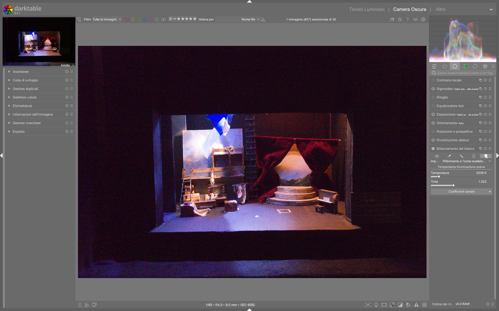

White Balance¶
Il modulo white balance è il primo modulo tecnico della pipeline di elaborazione RAW in darktable, responsabile della correzione obbligatoria del bilanciamento del bianco prima che i dati possano essere correttamente demosaicati e processati. Il suo scopo non è creativo ma tecnico: garantire che i grigi neutri della scena siano resi con valori RGB uguali (R = G = B) nel flusso di lavoro1. A differenza di Lightroom, dove il bilanciamento del bianco è un singolo strumento flessibile, in darktable esso opera in sinergia con il modulo color calibration, che gestisce la successiva adattazione cromatica percepita2.
White balance è obbligatorio — non opzionale
Il modulo white balance è attivo per ogni immagine RAW caricata e non può essere disattivato. Anche se impostato su “as shot”, i suoi coefficienti RGB vengono comunque calcolati e applicati per permettere al modulo demosaic di funzionare correttamente1. Questo è un requisito tecnico del flusso RAW, non una scelta editoriale.
Panoramica¶
Il modulo white balance opera esclusivamente sui dati RAW prima dell’applicazione del profilo colore d’ingresso (input color profile) e del demosaicing. I suoi parametri influenzano direttamente i coefficienti RGB che moltiplicano i canali del sensore, determinando così come verrà interpretata la luce incidente. La sua azione è fondamentale perché:
- Un bilanciamento errato genera dominanti cromatiche che compromettono tutti i moduli successivi (es.
exposure,filmic rgb,color balance rgb) - Senza una correzione accurata, il modulo
demosaicproduce artefatti cromatici e perdita di dettaglio, specialmente nelle zone con transizioni morbide o texture fini14
Il modulo fornisce tre modalità di controllo complementari: 1. Temperature & Tint: interfaccia intuitiva basata su Kelvin e correzione magenta-verde 2. Presets: preimpostazioni derivate dai metadati EXIF della fotocamera (es. “sunny”, “cloudy”, “tungsten”) 3. Channel coefficients: controllo diretto e preciso dei moltiplicatori RGB (da 0.000 a 8.000), usato internamente da tutti gli altri metodi1
Attenzione alla compatibilità tra fotocamere
I coefficienti RGB calcolati da temperature/tint dipendono dalle caratteristiche specifiche del sensore e del firmware della fotocamera. Applicare le impostazioni di bilanciamento di una Canon su un file Fujifilm produrrà risultati imprevedibili e spesso errati1. Per questo motivo, i preset sono generati per modello di fotocamera e non sono trasferibili.
Flusso di lavoro consigliato¶
Il flusso ideale per il bilanciamento del bianco segue una sequenza rigorosa, specie nei workflow scene-referred (AGX, Filmic RGB):
1. Verifica iniziale (istogramma RGB + visualizzazione verde)
|
2. Scelta del preset più vicino ("as shot" o "camera reference")
|
3. Affinamento manuale con pipetta su area neutra o regolazione temperature/tint
|
4. Convalida tramite modulo color calibration (CAT tab) per adattazione percettiva
Passo 1: Diagnosi visiva con l’istogramma RGB¶
Prima di qualsiasi regolazione, osserva l’istogramma RGB nel pannello destro:
- Se un canale domina nettamente (es. verde molto più alto di rosso/blu), l’immagine appare con una forte dominante cromatica (tipicamente verde, poiché i sensori Bayer hanno il doppio dei pixel verdi)14
- L’immagine apparirà “verde” anche se il bilanciamento è tecnicamente corretto: questo è normale e sarà risolto solo dopo il demosaicing e il profilo colore
Passo 2: Partenza dal preset “as shot”¶
Il preset predefinito è as shot, che legge direttamente i metadati EXIF della fotocamera. È il punto di partenza più affidabile, soprattutto se la fotocamera era stata impostata correttamente sul campo1.
- Non modificare mai white balance prima di aver verificato che input color profile sia impostato su “scene-referred default” o “embedded” — un profilo errato invalida ogni regolazione successiva2
Passo 3: Correzione con la pipetta “from image area”¶
Per precisione massima, usa la funzione from image area:
- Disegna un rettangolo su una zona effettivamente neutra (es. carta grigia, asfalto asciutto, parete bianca non illuminata da luci colorate)
- Il modulo calcola automaticamente i coefficienti RGB per rendere quella zona con R=G=B
- Range tipico dei coefficienti risultanti:
- red: 1.200 – 3.500
- green: 1.000 (valore di riferimento, fissato a 1.000)
- blue: 1.300 – 4.200
(es. screenshot video: red=2.009, green=1.000, blue=1.450)3
Area neutra ≠ superficie bianca
Una superficie bianca sotto luce fluorescente non è neutra: contiene una dominante verde. Cerca aree con riflettanza uniforme e bassa saturazione cromatica. Se non trovi nulla, usa “AI detect from surfaces” in color calibration come backup2.
Parametri principali¶
| Parametro | Range | Default | Descrizione |
|---|---|---|---|
| temperature | 2000 K – 15000 K | ~5000–6500 K (dipende dalla fotocamera) | Regola la temperatura cromatica. Valori bassi → tonalità fredde (blu); alti → tonalità calde (giallo/oro). Usato per bilanciare luci da lampade, sole, flash1. |
| tint | 0.10 – 10.00 | 1.00 | Corregge la dominante magenta-verde. <1.00 → più magenta; >1.00 → più verde. Fondamentale per compensare aberrazioni cromatiche e illuminazione artificiale1. |
| red channel | 0.000 – 8.000 | variabile (calcolato) | Coefficiente moltiplicativo per il canale rosso. Aumentarlo schiarisce i rossi; diminuirlo li scurisce. Valore tipico: 1.800–2.500 per scene esterne1. |
| green channel | 0.000 – 8.000 | 1.000 (fisso) | Canale di riferimento. Non modificabile manualmente: tutti gli altri coefficienti sono relativi a questo valore1. |
| blue channel | 0.000 – 8.000 | variabile (calcolato) | Coefficiente moltiplicativo per il canale blu. Tipicamente più alto del rosso in condizioni di luce fredda (es. 2.800–3.600)1. |
Modalità di visualizzazione slider¶
Le barre di regolazione possono essere personalizzate in Preferences > Darkroom > white balance slider colors:
- no color (default): slider monocromatici
- illuminant color: il colore dello slider rappresenta la luce da cui ti stai bilanciando (es. blu per luce fredda)
- effect emulation: il colore rappresenta l’effetto applicato all’immagine (es. giallo per riscaldare)1
Presets avanzati e uso professionale¶
Oltre ai preset standard (“as shot”, “cloudy”, “tungsten”), darktable offre due preset strategici per il workflow professionale:
| Preset | Quando usarlo | Valore tipico (esempio) |
|---|---|---|
| camera reference | Per calibrazione precisa o quando si usano profili custom. Imposta la temperatura a D65 (~6502 K) e calcola i coefficienti per convertire il bianco della fotocamera in sRGB D651. | temperature: 6502 K, tint: 1.000, red: 1.972, blue: 2.410 |
| user modified | Automaticamente selezionato dopo ogni modifica manuale. Permette di tornare rapidamente allo stato più recente senza dover salvare un preset1. | Dinamico — memorizza l’ultima combinazione modificata |
Crea preset specifici per fotocamera
Per ottenere coerenza assoluta tra immagini della stessa sessione, scatta una foto su un foglio bianco o grigio neutro sotto la stessa illuminazione. Usa from image area su quell’immagine, quindi salva un preset con nome come GFX100S-studio-D65. Questo preset sarà disponibile solo per immagini della stessa fotocamera3.
Relazione con color calibration¶
Il modulo white balance non sostituisce color calibration: ne è il prerequisito tecnico. Mentre white balance garantisce che i grigi siano neutri, color calibration (nella scheda CAT) effettua una vera e propria adattazione cromatica per simulare come la scena sarebbe apparsa sotto un diverso illuminante (es. D50 del monitor vs luce solare reale)2.
white balance→ “rendi neutro il grigio”color calibration→ “fai sembrare questa scena come se fosse stata illuminata da D50”
Per abilitare il workflow moderno:
1. Vai in Preferences > Processing > auto-apply chromatic adaptation defaults
2. Seleziona modern (anziché legacy)
3. color calibration verrà applicato automaticamente dopo white balance, con parametri ottimizzati per CAT162
Consigli operativi¶
- Non usare mai temperature > 10000 K o < 3000 K senza verifica: valori estremi possono generare coefficienti RGB non fisicamente plausibili, causando clipping cromatico irrecuperabile1.
- Abilita sempre la visualizzazione “display sample in vectorscope” quando usi la pipetta: ti mostra in tempo reale se il campione è davvero neutro (punto centrale del vettore)3.
- Evita di regolare
white balancedopocolor calibration: la gerarchia è fissa — ogni modifica successiva invalida l’adattazione cromatica già calcolata2. - Per immagini notturne con luci miste, usa
color calibration> (AI) detect from edges, che identifica meglio le transizioni cromatiche rispetto alla media globale2.
Esempio: Calibrazione rapida con AI detect from surfaces¶
Da darktable Full edit #1 (timestamp 12:45)
1. Apri l’immagine RAW in camera oscura
2. Nella scheda CAT di color calibration, seleziona (AI) detect from surfaces
3. Assicurati che white balance sia impostato su camera reference (automatico con workflow moderno)
4. Osserva il valore CCT mostrato accanto al campione di illuminante: se etichettato (invalid), passa a custom illuminant
5. Usa i cursori hue e chroma in LCh per affinare: tipicamente hue = 120°–180°, chroma = 0.05–0.12 per luci fluorescenti interne3
Esempio: Workflow batch per serie fotografica¶
Da batch-editing images (sezione “profiling the series”)
1. Scatta un’immagine di un color checker X-Rite sotto la stessa illuminazione della serie
2. In color calibration > CAT tab, usa (AI) detect from surfaces sull’immagine del color checker
3. Salva lo stato come preset automatico con nome Studio_D65_XRite24
4. Applica il preset a tutta la serie con copy/paste history stack in lighttable
5. Verifica che white balance mostri camera reference e che il valore temperature sia fisso a 6502 K5
Domande frequenti¶
Problema: Il modulo white balance non risponde ai cursori temperature/tint¶
Questo accade quando white balance è impostato su camera reference, che blocca i controlli temperature/tint per garantire la stabilità della calibrazione tecnica. Per modificare manualmente, cambia prima il preset in as shot, apporta le modifiche, quindi torna a camera reference per validare l’adattazione cromatica con color calibration6.
Problema: Dopo aver usato from image area, i coefficienti red e blue sono fuori scala (>5.000)¶
Coefficienti superiori a 4.000 indicano un illuminante non standard (es. LED a spettro limitato, lampade al sodio). In questi casi, white balance non è sufficiente: procedi subito con color calibration > CAT tab e seleziona custom illuminant per un controllo preciso in CIE LCh2.
Problema: Il valore CCT mostrato in color calibration è etichettato (invalid)¶
Ciò significa che l’illuminante stimato non giace vicino al locus Planckiano o Daylight. Non è un errore: è un segnale che il sistema richiede un approccio più preciso. Attiva custom illuminant e usa i cursori hue e chroma, non la temperatura2.
Tabella preset built-in¶
| Preset | Descrizione | Compatibilità |
|---|---|---|
| as shot | Legge i metadati EXIF della fotocamera (Exif.Photo.WhiteBalance). Valore predefinito. |
Universale, ma dipende dall’accuratezza della fotocamera |
| from image area | Calcola i coefficienti RGB da un rettangolo disegnato. Imposta green = 1.000 come riferimento. |
Tutti i sensori RAW, richiede area neutra con minimo 200 pixel |
| camera reference | Fissa temperature = 6502 K e calcola red/blue per convertire il bianco della fotocamera in D65 sRGB. Richiesto per workflow moderno. |
Solo con fotocamere supportate da RawSpeed e profili WB completi1 |
| user modified | Memorizza l’ultima combinazione di temperature, tint, red, blue modificata manualmente. |
Automatico per ogni immagine modificata |
Riferimenti visuali¶

{kind=link}
Risorse aggiuntive¶
- darktable user manual — white balance
- darktable user manual — color calibration
- [ENG] darktable Full edit #1 — White balance calibration workflow (YouTube)
- [ENG] The darktable pipeline for beginners — Technical modules deep dive (YouTube)
- [ENG] Filmic & Sigmoid Part 4 — Exposure and white balance setup (YouTube)
Fonti¶
-
darktable user manual - white balance, https://docs.darktable.org/usermanual/development/en/module-reference/processing-modules/white-balance/ ↩↩↩↩↩↩↩↩↩↩↩↩↩↩↩↩↩
-
darktable user manual - color calibration, https://docs.darktable.org/usermanual/development/en/module-reference/processing-modules/color-calibration/ ↩↩↩↩↩↩↩↩↩
-
[ENG] darktable Full edit #1, https://www.youtube.com/watch?v=DzdGL30lYjU ↩↩↩↩
-
[ENG] The darktable pipeline for beginners, https://www.youtube.com/watch?v=1nPW6WPhhTo ↩↩
-
darktable user manual - batch-editing images, https://docs.darktable.org/usermanual/development/en/guides-tutorials/batch-editing/ ↩
-
darktable user manual - processing, https://docs.darktable.org/usermanual/development/en/preferences-settings/processing/ ↩